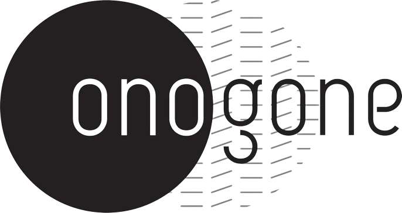
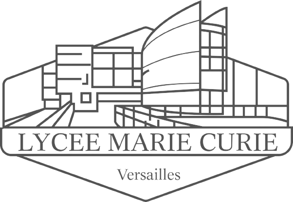

Sommaire

(07/2021 - 01/2022)
(08/2018 - 06/2021)
(09/2015 - 07/2017)
Onogone
Stage en Marketing : Premiers pas dans le monde du travail
(Juillet 2021 - Janvier 2022) - Paris
Ce stage de fin d'étude venait compléter ma spécialité choisie à l'IESEG : le Marketing.
En tant que Chargé de Marketing et Communication mes principales missions étaient les suivantes :
- Gestion de la communication sur les réseaux sociaux
- Création et design de flyers
- Rédaction d'articles pour le blog
- Veille concurrentielle
- Contribution à l'entrainement d'une intelligence artificielle
Le marketing et la communication ne sont pourtant pas les disciplines autour desquelles ma carrière s'est construite vous me direz. Alors comment expliquer ce basculement vers le recrutement tout de suite après ce stage ?
Et bien en vérité, je ne me suis pas épanoui dans ce stage pour une raison très claire. Mis à part ma tutrice de stage, je n'avais quasiment aucun contact avec qui que ce soit. Je passais en effet mes journées seules sur mon ordinateur, et c'est ce sentiment d'isolement qui m'a déplu.
Mais cette frsutration n'a pas été source de démotivation, bien au contraire. Le pragmatisme étant une de mes plus grandes qualités, j'ai décidé alors d'être force d'initiative et de demander à participer à davantage de tâches, notamment celles qui impliquaient un contact avec des personnes extérieures. C'est alors que j'ai participer aux missions suivantes :
- Entretiens de recrutement
- RDV clients
- Webinars sur l'actualité de l'IA
- Animation en salon et forum
- Rencontre avec les prospects
Toutes ces missions ont une chose en commun : l'importance du Relationnel. C'est donc ce stage, bien qu'initialement éloigné de cette notion, qui m'a fait prendre conscience de ce qui m'animait dans mon travail.
Mon parcours en Grande École
(Août 2018 - Juin 2021) - Paris (La Défense)
L'IESEG est une école de commerce dont la voie d'entrée la plus classique est celle poste-bas. Cependant, comme je sortais de deux ans de class préparatoire, j'ai du passer des concours pour intégrer l'école en admission parallèle.
Au cours de la 3ème année du tronc commun (première année pour ma part), j'ai pu étudier de nombreuses matière comme :
- Le Management
- La Finance
- Le Marketing
- La Communication
- Le Droit
- Les Ressources Humaines
- La Stratégie en Entreprise
Le projet le plus marquant de cette année a pour moi été le Projet RSE mené pour METRO. Ce projet consistait à résoudre une problématique de mécontentement générale des employés au sein du groupe.
Plutôt que de seulement lire les avis des ex-employés en ligne et d'utiliser des notions théoriques sorties des cours de RH, j'ai utilisé mon pragmatisme pour demander à rencontrer directement les employés sur place pour les interroger. J'ai de ce fait obtenu l'opportunité de faire une simulation d'intégration au sein du groupe, ainsi que, avec mon groupe, de proposer un prototype de réseau social interne pour corriger le sentiment d'isolement ressenti par les employés. Et c'est un concept qui a servi de base pour la mise en place réelle de cette plate-forme interne que METRO utilise encore aujourd'hui.
J'ai eu également de nombreux projets à réaliser pendant mes années de Master :
- Etudes de cas réels sur des situations auxquelles de grandes entreprises ont fait face
- Projets de groupe de mise en vente fictives de produits
- Business Games avec outils de simulations
- Création de campagnes Marekting et Communication
- Réalisation du Mémoire sur la : e-reputation et UGC (User Generated Content: commentaires, photos, etc...)
Classe Préparatoire D2 ENS
Parcours intensif de préparation aux Grandes Écoles
(Septembre 2015 - Juillet 2017) - Versailles
La Classe Préparatoire aux Grandes Ecoles DS ENS est un parcours intensif de 2 ans dont l'objectif est le plus haut est d'intégrer l'école Normale Supérieure de Cachan. Mais celle-ci étant extrêmement séléctive, ce parcours prépare plus communément aux concours des Grandes Ecoles de Management.
On y étudie les matières suivantes :
- Le Management
- L'Économie (Macro et Micro)
- La Comptabilité
- La Gestion Financière
- Les Mathématiques
- Les langues (Anglais et Espagnol)
- La Culture Générale
Ce parcours au rythme très soutenu a forgé ma perseverance et ma gestion du stress, qualités sans lesquelles je n'aurais pas pu aller aussi loin, et qui me serviront tout au long de ma vie professionelle.